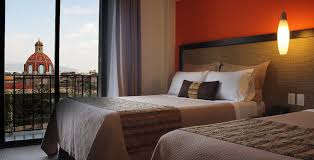
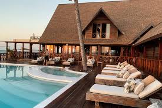
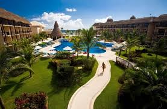
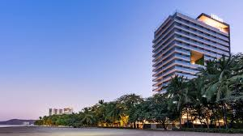

El Hotel Estrella del Mar, ubicado en la isla de Maravilla, ofrece lujo y elegancia en un entorno tropical. Con habitaciones amplias y modernas, vistas panorámicas al océano y una variedad de servicios de primer nivel, es el destino perfecto para una escapada exclusiva.

The Royal Oasis, situado en el corazón de Ciudad Brillante, es un símbolo de lujo y sofisticación. Con habitaciones elegantes y servicios de primera clase, incluyendo gastronomía excepcional y un spa de lujo, ofrece una experiencia incomparable en el corazón de la ciudad.

Hotel Luna de Plata Situado en lo alto de los Andes, el Hotel Luna de Plata ofrece una experiencia única en un entorno natural impresionante. Con cabañas de estilo rústico, vistas panorámicas de las montañas y actividades al aire libre como senderismo y observación de aves, es el refugio perfecto para los amantes de la naturaleza.
 El Palacio del Marqués, ubicado en el corazón de una antigua ciudad colonial, es una obra maestra de la arquitectura histórica. Con habitaciones lujosas decoradas con muebles antiguos, un patio interior lleno de encanto y una cocina gourmet que combina lo mejor de la gastronomía local e internacional, es un destino que transporta a sus huéspedes a otra época.